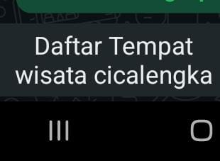

7 Tempat Wisata Cicalengka Terbaru 2026 yang Hits dan Wajib Dikunjungi

Kawasan Cicalengka di Bandung Timur kini semakin diminati sebagai destinasi liburan favorit. Menawarkan perpaduan lanskap perbukitan yang asri, udara sejuk, serta wahana rekreasi modern dan spot wisata Islami, Cicalengka menjadi pilihan ideal untuk wisata keluarga maupun tempat santai di akhir pekan.
1. Rekomendasi Destinasi Wisata Cicalengka Terpopuler
Berikut adalah daftar destinasi wisata Cicalengka terbaru dan paling favorit yang menyajikan pengalaman seru dari alam hingga wahana kekinian:
- Cicalengka Dreamland: Wisata berkonsep nuansa Islami terbesar yang memiliki spot landmark tulisan "Laa Ilaaha Illallah" raksasa di perbukitan. Menawarkan wahana wahana seru seperti flying fox terpanjang di Indonesia, berkuda, memanah, playground anak, hingga cafe perbukitan. (Tiket masuk: Rp20.000–Rp25.000).
- Curug Cinulang (Sindangwangi): Air terjun kembar yang sangat legendaris di perbatasan Cicalengka dan Sumedang. Menyajikan udara segar, suara gemericik air yang menenangkan, serta akses fasilitas penunjang yang sudah tertata rapi. (Tiket masuk: Rp15.000).
- Taman Burung & Wisata Alam Kampung Kerang: Destinasi wisata keluarga dengan nuansa edukasi fauna dan perbukitan hijau, cocok untuk tempat piknik santai bersama anak-anak.
- Bukit Teletubbies Cicalengka (Taman Bunga Cicalengka): Hamparan perbukitan hijau bergelombang yang menyerupai lanskap Teletubbies, sering dijadikan tempat favorit untuk hunting foto sunrise, outdoor photography, dan kegiatan kemping.
- Puncak Peuncut & Bukit Kendan: Spot petualangan trekking ringan dengan latar pemandangan dataran rendah Cicalengka dari ketinggian, sangat disukai para pencinta alam dan fotografi lanskap.
- Curug Danau / Curug Cimenteng: Alternatif wisata air terjun tersembunyi (hidden gem) bagi Anda yang menyukai petualangan alam yang tenang dan alami.
- Villa & Camping Ground Cicalengka Highland: Area staycation dan camping dengan pemandangan City Light kota dari atas bukit pada malam hari.
2. Tips Berwisata Nyaman di Kawasan Cicalengka
Agar agenda liburan Anda ke Cicalengka berjalan lancar dan menyenangkan, perhatikan beberapa tips praktis berikut:
- Waktu Kunjungan Terbaik: Datanglah pada pagi hari (sekitar pukul 07.00 - 09.00 WIB) untuk menikmati udara yang sangat sejuk serta menghindari kemacetan di area jalur utama Cicalengka-Rancaekek.
- Kondisi Kendaraan: Jalur menuju beberapa spot bukit dan curug memiliki tanjakan yang cukup terjal. Pastikan kondisi rem dan mesin kendaraan Anda dalam keadaan prima.
- Pakaian Praktis: Gunakan alas kaki datar (sneakers atau sandal gunung) dan bawa jaket hangat, mengingat suhu perbukitan Cicalengka bisa menjadi cukup dingin pada sore hingga malam hari.
• Dinas Kebudayaan dan Pariwisata (Disbudpar) Kabupaten Bandung
• Google Maps & Direktori Destinasi Wisata Cicalengka 2026
• Akun Resmi Pengelola Cicalengka Dreamland & Curug Cinulang
Beli Oleh-Oleh / Souvenir Saat Berwisata di Cicalengka?
Bagi Anda yang berwisata ke Cicalengka dan ingin mengirim paket barang, paket oleh-oleh khas Bandung, atau pengiriman jualan online tanpa repot membawa pulang, percayakan pada Lion Parcel POS101 Rancaekek. Kirim paket murah, cepat, dan aman sampai tujuan!
💬 Chat WhatsApp 0851-8309-0486📍 Lokasi Agen Lion Parcel Bandung POS101 Nanjungmekar
Pos pengiriman terdekat dari area wisata Cicalengka: Jl. Raya Barat Cicalengka RT 1 RW 1, Nanjung Mekar, Rancaekek, Kabupaten Bandung, Jawa Barat.
Kesimpulan
Cicalengka menawarkan ragam pilihan destinasi wisata alam dan rekreasi yang cocok untuk semua kalangan. Jika Anda sedang berlibur atau memiliki bisnis di sekitar Cicalengka & Rancaekek, tak perlu khawatir soal pengiriman paket barang atau produk usaha. Lion Parcel POS101 Nanjungmekar siap melayani kebutuhan ekspedisi Anda dengan cepat, efisien, dan harga terjangkau.
Nama Agen: Lion Parcel Bandung POS101 Nanjungmekar Rancaekek
Jam Operasional: Senin–Minggu, 08.00–20.00 WIB
Alamat: Jl. Raya Barat Cicalengka RT 1 RW 1, Nanjung Mekar, Rancaekek, Kabupaten Bandung
WhatsApp: 0851-8309-0486